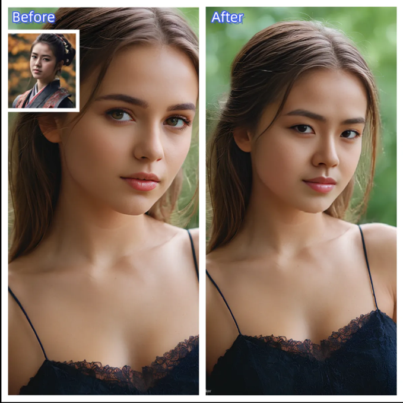
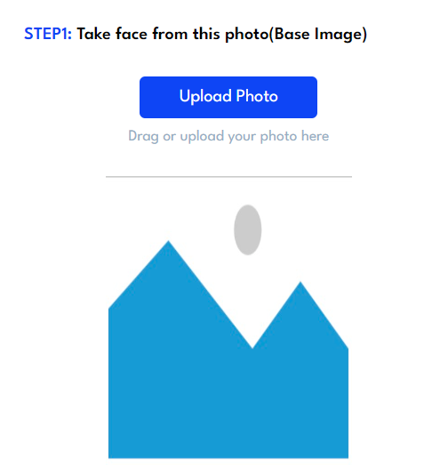
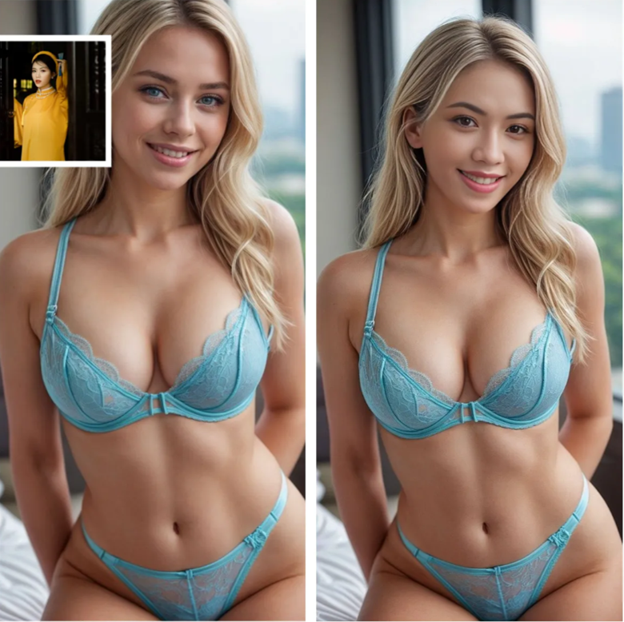
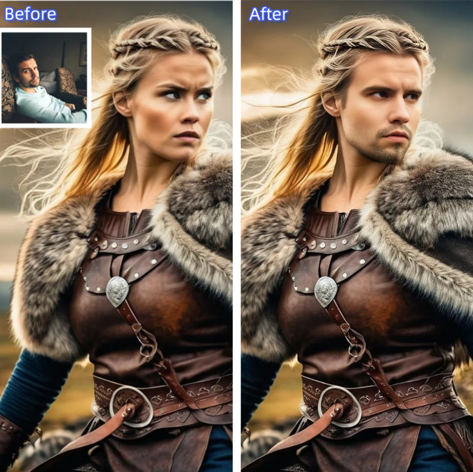

How To Make Your Own Deepfake
You have heard of deepfake makers if you are a fan of virtual reality. The term is commonly used in advanced software news and applications. It is an exciting venture that has extended the boundaries of reality. Free deepfake makers are popular among content creators. Tech enthusiasts also use them. You can use deepfake tools to test the technology so the excitement runs in your veins.
You can make your deepfakes using many tools and applications. However, some are more complicated than others. PicsTrick Face Swap, a free online face-swapping tool for fun and entertainment, is recommended for you.

What is Deepfake?
Deepfake exists in many forms. You can create them in audio, video, and photos. Deepfake makers use artificial intelligence in addition to machine learning technology. Firstly, you will need to input the content that is processed using a neural network. The algorithm will study the material from different angles and lighting.
As a result, the deepfake tool will comprehend and copy the features of the person to produce the relevant output. With the help of many free deepfake tools online like PicsTrick, you can create your JPEG, PNG, GIF, Webm photos. However, remember, the outcomes from the tool are a hoax and not a reality. You can use the deepfake maker to put someone else’s face on something to generate realistic results.
What is PicsTrick Face Swap?
PicsTrick Face Swap is a leading free deepfake maker that utilizes face-changing technology. Since it’s an online one, it’s very intuitive. Moreover, the algorithm will create real-looking and joyful face swaps. The free deepfake maker uses the latest AI technology to integrate faces in different images. The tool is popular among casual deepfake lovers and professional content creators.
The guide focuses on everything related to the PicsTrick Face Swap. It includes the steps to help you create a deepfake whenever you need it. PicsTrick Face Swap is famous among the community for its high-resolution results and seamless interface. You can use the tool freely because of its versatile features and instant processing time.
Reasons
for Using PicsTrick Face Swap to Make Your Own Deepfake
AI-powered results
PicsTrick Face Swap has the latest AI technology, which is not available among competitors. You can use machine learning technology to change faces seamlessly. The results are so realistic that they will even fool you! The AI algorithm will analyze the facial features. The algorithm will combine the input with the target pictures. It will keep the same skin tone, lighting, and other underlying details the same as the original image.
User-Friendly
PicsTrick Face Swap gained traction because of its user interface. You can use a deepfake maker even if you are a novice who has limited knowledge of complicated faces. On the other hand, professionals can use advanced features to generate better results. The interface uses a drag-and-drop interface, which makes the entire process very simple.
Personalization
The users have the option to pick from numerous templates when using PicsTrick Face Swap. In addition, you can upload your images for customized results. The flexibility in features is excellent for professionals as well as beginners. It is up to you to decide the amount of control you need for each project.
High-quality results
PicsTrick Face Swap will deliver high-resolution results each time. The algorithm ensures the output ensures the quality regardless of the complications in the project. The feature is very helpful for professionals who are looking for details in the deepfake. You can use the tool for sharp pictures.
Privacy
PicsTrick Face Swap is very strict about data privacy. The platform ensures that data is processed promptly and accurately. The images are uploaded and studied instantly. Furthermore, the images are also deleted after their use. It gives the users the peace of mind that their images are not used without permission or sold to third parties.
The Advantages of
Using PicsTrick Face Swap
PicsTrick Face Swap will maintain the reality of the pictures so
they are not fake. For example, the algorithm will not compromise the
facial features, expressions, or skin texture.
PicsTrick Face Swap delivers results quickly. You can expect the
face swap results to appear on the screen in a few minutes.
The customized and pre-existing templates focus on versatility.
The platform is available for
How to Use
PicsTrick Face Swap to Generate Deepfakes?
PicsTrick Face Swap will maintain the reality of the pictures so they are not fake. For example, the algorithm will not compromise the facial features, expressions, or skin texture.
PicsTrick Face Swap delivers results quickly. You can expect the face swap results to appear on the screen in a few minutes.
The customized and pre-existing templates focus on versatility. The platform is available for
The deepfake maker has simple steps to aid the users on their journey of AI-projected images.
Step 1: Log In
You will need to sign up on the PicsTrick Face Swap official website to proceed. The platform will ask for your details. After you have registered, log in with your email and password. You now have access to the complete array of features and templates.
Step 2: Uploading Images
The users will upload the images in the next step. You must also upload images for which you will need to swap faces. PicsTrick Face Swap lets you upload numerous images at the same time to save yourself from repetition. In the current step, you can also experiment with different backgrounds and faces.

Step 3: Template
PicsTrick Face Swap offers numerous templates for you to choose from. We suggest browsing the options before making the best pick. The best template matches your requirements and the expectations from the results. In addition, PicsTrick Face Swap also offers a customized approach in which you can personalize the swap for the images.
Step 4: Face swapping
Now users can apply for face swapping. The free deepfake maker will launch the algorithm so the engine can comprehend the images. The AI will swap, so the final results are realistic. Even you will be convinced!

Step 5: Download and review
After the swap has been applied, you can check the images to ensure the results meet your expectations. If you are content with the generated images, click Download to store the high-quality images on your device. You can adjust the images as well. PicsTrick Face Swap lets the users go back to the processing steps and change the settings.
How Much Does PicsTrick Face Swap cost?
The deepfake maker is a pricing model that involves free and premium features. The provider offers a free feature with the primary features. However, the premium versions include advanced facilities for better results.
With the free version, you can do face swaps of 30 credits. The templates are provided. You upload the images.
If the users are seeking advanced features or high-resolution results, PicsTrick Face Swap is a one-time purchase. The prices of the PicsTrick Face Swap vary between $9.99 to $39.99. In short, the pricing depends on the features and the particular package.
The pricing model leads to a flexible budget with PicsTrick Face Swap. The online deepfake tool is available to a wide audience. It is useful for professionals and beginners with elegant tools. The one-time payment process is simple to understand. The users do not pay to afford advanced features repeatedly. In short, PicsTrick Face Swap offers excellent value against the tools.
Who Can Use PicsTrick Face
Swap?
Social media creators
The deepfake maker is very popular among social media users and influencers. They can use face-swapping technology to generate unique content that increases engagement. The content sparks humor and joy among the crowd. PicsTrick Face Swap is best for Instagram, TikTok, and Facebook influencers to attract more followers.
Marketing and promotions
Brands can also use PicsTrick Face Swap for generative marketing content. Swapping faces is excellent for advertising images. You can use the deepfake to create highly attractive material. It will retain customer attention so the admirers shop for your brand. The tool is very innovative to help you stand out in a crowded brand market.

Educational sessions
Education and academic institutions can use PicsTrick Face Swap to generate interactive material. The content is highly engaging. You can use the tool to swap faces of historical sites and educational diagrams. It makes learning more fun and relatable. The students will understand the lessons better. The deepfake maker will customize the lessons to appeal to students of different mindsets.
Entertainment
PicsTrick Face Swap will generate promotional materials excellently. The entertainment industry can use the tool to create movie posters with high-quality visual results. The users can ensure the face-swapping results align with the industry standards. Filmmakers and graphic designers can use the tool to create visuals. It will capture the attention of the audience instantly.
Is It Dangerous to Use PicsTrick Face Swap?
Presently, the technologies used in such software and tools are not dangerous. They will not fool the users completely. However, the application of deepfake is an individualistic responsibility. Deepfakes are a threat to the society if applied inaccurately. Malicious people may use PicsTrick Face Swap to misrepresent their interests.
Therefore, you must ensure that the deepfakes you are making or interacting with do not cross legal boundaries. Furthermore, do not use the technology with malice to hurt people.
Use PicsTrick Face Swap Today
The deepfake technology, machine learning, and AI technology in PicsTrick Face Swap will generate realistic images and videos. Even though there are many free deepfake makers online, PicsTrick Face Swap online tool will provide the best results. You can rely on the watermarks to ensure the deepfakes you create are not utilized unethically.